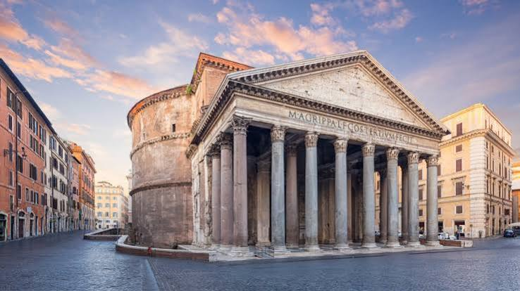
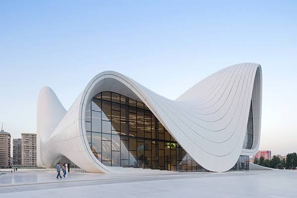
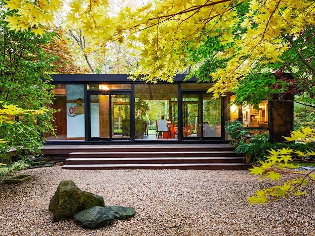
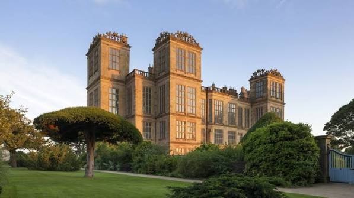

Title: The Pantheon
Category Tag: Architecture
Description: The Pantheon in Rome at sunrise. Its grey granite columns and triangular pediment fill the frame, with the inscription "M·AGRIPPA·L·F·COS·TERTIVM·FECIT" carved across the frieze. The brick rotunda curves away behind, and the piazza's cobblestones sit empty in warm early light, with pastel buildings and a soft pink-and-blue sky framing either side.

Title: The Heydar Aliyev Center
Category: Architecture
Description: The Heydar Aliyev Center in Baku: a sweeping white building with no straight lines, its curving shell folding into a tall arch and a wave-like roofline. Dark glass fills the openings beneath the white skin. A few tiny figures cross the pale plaza in front, and apartment blocks sit low on the horizon under a clear, bright sky.

Title: Modern Single
Category: Architecture
Description: A low, single-storey modern house with a flat black roof and walls that are almost entirely glass. Warm interior light glows through the windows, showing a dining table and a lit room beyond. Wide wooden steps lead up to the entrance, and the foreground is a bed of pale gravel with two dark boulders. Yellow and green maple foliage frames the top and sides, so the house sits inside the garden rather than beside it.

Title: A Grand Manor
Category: Architecture
Description: A grand Elizabethan manor of warm honey-coloured stone, seen from the lawn in low golden evening light. Three ornate towers with carved crests rise above a long facade of tall mullioned windows. A wide, flat-topped tree stands left of centre on manicured grass, with clipped hedges and shrubs along the front, and a blue gate at the far right.